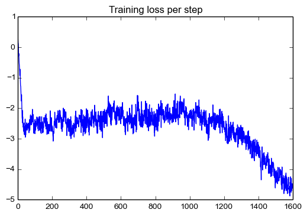
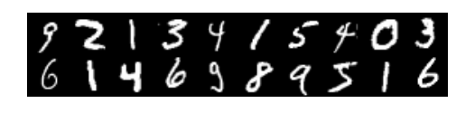

TFGAN Tutorial¶
Authors: Joel Shor, joel-shor¶
More complex examples, see `tensorflow/models/gan <https://github.com/tensorflow/models/tree/master/research/gan>`__¶
This notebook will walk you through the basics of using TFGAN to define, train, and evaluate Generative Adversarial Networks. We describe the library’s core features as well as some extra features. This colab assumes a familiarity with TensorFlow’s Python API. For more on TensorFlow, please see TensorFlow tutorials.
Please note that running on GPU will significantly speed up the training steps, but is not required.
Last update: 2018-02-10.
Table of Contents¶
Installation and Setup Download Data Unconditional GAN example Input pipeline Model Loss Train and evaluation GANEstimator example Input pipeline Train Eval Conditional GAN example Input pipeline Model Loss Train and evaluation InfoGAN example Input pipeline Model Loss Train and evaluation
## Installation and setup
To make sure that your version of TensorFlow has TFGAN included, run
python -c "import tensorflow.contrib.gan as tfgan"
You also need to install the TFGAN models library.
To check that these two steps work, execute the
`Imports <#imports>`__ cell. If it complains about unknown modules,
restart the notebook after moving to the TFGAN models directory.
In [3]:
from __future__ import absolute_import
from __future__ import division
from __future__ import print_function
%matplotlib inline
import matplotlib.pyplot as plt
import numpy as np
import time
import functools
from six.moves import xrange # pylint: disable=redefined-builtin
import tensorflow as tf
# Main TFGAN library.
tfgan = tf.contrib.gan
# TFGAN MNIST examples from `tensorflow/models`.
from mnist import data_provider
from mnist import util
# TF-Slim data provider.
from datasets import download_and_convert_mnist
# Shortcuts for later.
queues = tf.contrib.slim.queues
layers = tf.contrib.layers
ds = tf.contrib.distributions
framework = tf.contrib.framework
Common functions¶
These functions are used by many examples, so we define them here.
In [5]:
MNIST_DATA_DIR = '/tmp/mnist-data'
if not tf.gfile.Exists(MNIST_DATA_DIR):
tf.gfile.MakeDirs(MNIST_DATA_DIR)
download_and_convert_mnist.run(MNIST_DATA_DIR)
Dataset files already exist. Exiting without re-creating them.
# Unconditional GAN Example
With unconditional GANs, we want a generator network to produce realistic-looking digits. During training, the generator tries to produce realistic-enough digits to ‘fool’ a discriminator network, while the discriminator tries to distinguish real digits from generated ones. See the paper ‘NIPS 2016 Tutorial: Generative Adversarial Networks’ by Goodfellow or ‘Generative Adversarial Networks’ by Goodfellow et al. for more details.
The steps to using TFGAN to set up an unconditional GAN, in the simplest case, are as follows:
- Model: Set up the generator and discriminator graphs with a
`GANModel<https://github.com/tensorflow/tensorflow/blob/master/tensorflow/contrib/gan/python/namedtuples.py#L39>`__ tuple. Use`tfgan.gan_model<https://github.com/tensorflow/tensorflow/blob/master/tensorflow/contrib/gan/python/train.py#L64>`__ or create one manually. - Losses: Set up the generator and discriminator losses with a
`GANLoss<https://github.com/tensorflow/tensorflow/blob/master/tensorflow/contrib/gan/python/namedtuples.py#L115>`__ tuple. Use`tfgan.gan_loss<https://github.com/tensorflow/tensorflow/blob/master/tensorflow/contrib/gan/python/train.py#L328>`__ or create one manually. - Train ops: Set up TensorFlow ops that compute the loss, calculate
the gradients, and update the weights with a
`GANTrainOps<https://github.com/tensorflow/tensorflow/blob/master/tensorflow/contrib/gan/python/namedtuples.py#L128>`__ tuple. Use`tfgan.gan_train_ops<https://github.com/tensorflow/tensorflow/blob/master/tensorflow/contrib/gan/python/train.py#L476>`__ or create one manually. - Run alternating train loop: Run the training Ops. This can be
done with
`tfgan.gan_train<https://github.com/tensorflow/tensorflow/blob/master/tensorflow/contrib/gan/python/train.py#L661>`__, or done manually.
Each step can be performed by a TFGAN library call, or can be constructed manually for more control.
## Data input pipeline
In [5]:
tf.reset_default_graph()
# Define our input pipeline. Pin it to the CPU so that the GPU can be reserved
# for forward and backwards propogation.
batch_size = 32
with tf.device('/cpu:0'):
real_images, _, _ = data_provider.provide_data(
'train', batch_size, MNIST_DATA_DIR)
# Sanity check that we're getting images.
check_real_digits = tfgan.eval.image_reshaper(
real_images[:20,...], num_cols=10)
visualize_digits(check_real_digits)

## Model
Set up a GANModel tuple, which defines everything we need to perform GAN training. You can create the tuple with the library functions, or you can manually create one.
Define the GANModel tuple using the TFGAN library function. For the simplest case, we need the following:
- A generator function that takes input noise and outputs generated MNIST digits
- A discriminator function that takes images and outputs a probability of being real or fake
- Real images
- A noise vector to pass to the generator
Generator¶
In [6]:
def generator_fn(noise, weight_decay=2.5e-5, is_training=True):
"""Simple generator to produce MNIST images.
Args:
noise: A single Tensor representing noise.
weight_decay: The value of the l2 weight decay.
is_training: If `True`, batch norm uses batch statistics. If `False`, batch
norm uses the exponential moving average collected from population
statistics.
Returns:
A generated image in the range [-1, 1].
"""
with framework.arg_scope(
[layers.fully_connected, layers.conv2d_transpose],
activation_fn=tf.nn.relu, normalizer_fn=layers.batch_norm,
weights_regularizer=layers.l2_regularizer(weight_decay)),\
framework.arg_scope([layers.batch_norm], is_training=is_training,
zero_debias_moving_mean=True):
net = layers.fully_connected(noise, 1024)
net = layers.fully_connected(net, 7 * 7 * 256)
net = tf.reshape(net, [-1, 7, 7, 256])
net = layers.conv2d_transpose(net, 64, [4, 4], stride=2)
net = layers.conv2d_transpose(net, 32, [4, 4], stride=2)
# Make sure that generator output is in the same range as `inputs`
# ie [-1, 1].
net = layers.conv2d(net, 1, 4, normalizer_fn=None, activation_fn=tf.tanh)
return net
Discriminator¶
In [7]:
def discriminator_fn(img, unused_conditioning, weight_decay=2.5e-5,
is_training=True):
"""Discriminator network on MNIST digits.
Args:
img: Real or generated MNIST digits. Should be in the range [-1, 1].
unused_conditioning: The TFGAN API can help with conditional GANs, which
would require extra `condition` information to both the generator and the
discriminator. Since this example is not conditional, we do not use this
argument.
weight_decay: The L2 weight decay.
is_training: If `True`, batch norm uses batch statistics. If `False`, batch
norm uses the exponential moving average collected from population
statistics.
Returns:
Logits for the probability that the image is real.
"""
with framework.arg_scope(
[layers.conv2d, layers.fully_connected],
activation_fn=leaky_relu, normalizer_fn=None,
weights_regularizer=layers.l2_regularizer(weight_decay),
biases_regularizer=layers.l2_regularizer(weight_decay)):
net = layers.conv2d(img, 64, [4, 4], stride=2)
net = layers.conv2d(net, 128, [4, 4], stride=2)
net = layers.flatten(net)
with framework.arg_scope([layers.batch_norm], is_training=is_training):
net = layers.fully_connected(net, 1024, normalizer_fn=layers.batch_norm)
return layers.linear(net, 1)
GANModel Tuple¶
In [8]:
noise_dims = 64
gan_model = tfgan.gan_model(
generator_fn,
discriminator_fn,
real_data=real_images,
generator_inputs=tf.random_normal([batch_size, noise_dims]))
# Sanity check that generated images before training are garbage.
check_generated_digits = tfgan.eval.image_reshaper(
gan_model.generated_data[:20,...], num_cols=10)
visualize_digits(check_generated_digits)

## Losses
We next set up the GAN model losses.
Loss functions are currently an active area of research. The losses library provides some well-known or successful loss functions, such as the original minimax, Wasserstein (by Arjovsky et al), and improved Wasserstein (by Gulrajani et al) losses. It is easy to add loss functions to the library as they are developed, and you can also pass in a custom loss function.
In [9]:
# We can use the minimax loss from the original paper.
vanilla_gan_loss = tfgan.gan_loss(
gan_model,
generator_loss_fn=tfgan.losses.minimax_generator_loss,
discriminator_loss_fn=tfgan.losses.minimax_discriminator_loss)
# We can use the Wasserstein loss (https://arxiv.org/abs/1701.07875) with the
# gradient penalty from the improved Wasserstein loss paper
# (https://arxiv.org/abs/1704.00028).
improved_wgan_loss = tfgan.gan_loss(
gan_model,
# We make the loss explicit for demonstration, even though the default is
# Wasserstein loss.
generator_loss_fn=tfgan.losses.wasserstein_generator_loss,
discriminator_loss_fn=tfgan.losses.wasserstein_discriminator_loss,
gradient_penalty_weight=1.0)
# We can also define custom losses to use with the rest of the TFGAN framework.
def silly_custom_generator_loss(gan_model, add_summaries=False):
return tf.reduce_mean(gan_model.discriminator_gen_outputs)
def silly_custom_discriminator_loss(gan_model, add_summaries=False):
return (tf.reduce_mean(gan_model.discriminator_gen_outputs) -
tf.reduce_mean(gan_model.discriminator_real_outputs))
custom_gan_loss = tfgan.gan_loss(
gan_model,
generator_loss_fn=silly_custom_generator_loss,
discriminator_loss_fn=silly_custom_discriminator_loss)
# Sanity check that we can evaluate our losses.
for gan_loss, name in [(vanilla_gan_loss, 'vanilla loss'),
(improved_wgan_loss, 'improved wgan loss'),
(custom_gan_loss, 'custom loss')]:
evaluate_tfgan_loss(gan_loss, name)
vanilla loss generator loss: -1.304018 vanilla loss discriminator loss: 1.597559 improved wgan loss generator loss: 0.169809 improved wgan loss discriminator loss: -0.012215 custom loss generator loss: -0.538480 custom loss discriminator loss: 0.080095
## Training and Evaluation
Train Ops¶
In order to train a GAN, we need to train both generator and
discriminator networks using some variant of the alternating training
paradigm. To do this, we construct a GANTrainOps
tuple
either manually or with a library call. We pass it the optimizers that
we want to use, as well as any extra arguments that we’d like passed to
slim’s create_train_op function.
In [10]:
generator_optimizer = tf.train.AdamOptimizer(0.001, beta1=0.5)
discriminator_optimizer = tf.train.AdamOptimizer(0.0001, beta1=0.5)
gan_train_ops = tfgan.gan_train_ops(
gan_model,
improved_wgan_loss,
generator_optimizer,
discriminator_optimizer)
WARNING:tensorflow:update_ops in create_train_op does not contain all the update_ops in GraphKeys.UPDATE_OPS
WARNING:tensorflow:update_ops in create_train_op does not contain all the update_ops in GraphKeys.UPDATE_OPS
Evaluation¶
TFGAN provides some standard methods of evaluating generative models. In this example, we use a pre-trained classifier to calculate what is called the ‘Inception Score’ from Improved Techniques for Training GANs (by Salimans et al), which is a combined score of quality and diversity. We also calculate the ‘Frechet Inception distance’ from GANs Trained by a Two Time-Scale Update Rule Converge to a Local Nash Equilibrium (by Heusel et al), which measures how close the generated image distribution is to the real image distribution.
In [11]:
num_images_to_eval = 500
MNIST_CLASSIFIER_FROZEN_GRAPH = './mnist/data/classify_mnist_graph_def.pb'
# For variables to load, use the same variable scope as in the train job.
with tf.variable_scope('Generator', reuse=True):
eval_images = gan_model.generator_fn(
tf.random_normal([num_images_to_eval, noise_dims]),
is_training=False)
# Calculate Inception score.
eval_score = util.mnist_score(eval_images, MNIST_CLASSIFIER_FROZEN_GRAPH)
# Calculate Frechet Inception distance.
with tf.device('/cpu:0'):
real_images, _, _ = data_provider.provide_data(
'train', num_images_to_eval, MNIST_DATA_DIR)
frechet_distance = util.mnist_frechet_distance(
real_images, eval_images, MNIST_CLASSIFIER_FROZEN_GRAPH)
# Reshape eval images for viewing.
generated_data_to_visualize = tfgan.eval.image_reshaper(
eval_images[:20,...], num_cols=10)
Train Steps¶
Now we’re ready to train. TFGAN handles the alternating training scheme
that arises from the GAN minmax game. It also gives you the option of
changing the ratio of discriminator updates to generator updates. Most
applications (distributed setting, borg, etc) will use the
`gan_train <https://github.com/tensorflow/tensorflow/blob/master/tensorflow/contrib/gan/python/train.py#L661>`__
function, but we will use a different TFGAN utility and manually run the
train ops so we can introspect more.
This code block should take about 1 minute to run on a GPU kernel, and about 8 minutes on CPU.
In [12]:
# We have the option to train the discriminator more than one step for every
# step of the generator. In order to do this, we use a `GANTrainSteps` with
# desired values. For this example, we use the default 1 generator train step
# for every discriminator train step.
train_step_fn = tfgan.get_sequential_train_steps()
global_step = tf.train.get_or_create_global_step()
loss_values, mnist_scores, frechet_distances = [], [], []
with tf.train.SingularMonitoredSession() as sess:
start_time = time.time()
for i in xrange(1601):
cur_loss, _ = train_step_fn(
sess, gan_train_ops, global_step, train_step_kwargs={})
loss_values.append((i, cur_loss))
if i % 200 == 0:
mnist_score, f_distance, digits_np = sess.run(
[eval_score, frechet_distance, generated_data_to_visualize])
mnist_scores.append((i, mnist_score))
frechet_distances.append((i, f_distance))
print('Current loss: %f' % cur_loss)
print('Current MNIST score: %f' % mnist_scores[-1][1])
print('Current Frechet distance: %f' % frechet_distances[-1][1])
visualize_training_generator(i, start_time, digits_np)
Current loss: 0.329137
Current MNIST score: 1.000079
Current Frechet distance: 344.763275
Training step: 0
Time since start: 0.033110 m
Steps per min: 0.000000

Current loss: -2.758185
Current MNIST score: 1.797050
Current Frechet distance: 213.724701
Training step: 200
Time since start: 1.144458 m
Steps per min: 174.755270

Current loss: -2.340148
Current MNIST score: 5.376083
Current Frechet distance: 64.949997
Training step: 400
Time since start: 2.269744 m
Steps per min: 176.231304
Current loss: -2.127394
Current MNIST score: 6.997816
Current Frechet distance: 33.048138
Training step: 600
Time since start: 3.387114 m
Steps per min: 177.141966
Current loss: -2.486658
Current MNIST score: 6.905512
Current Frechet distance: 30.577679
Training step: 800
Time since start: 4.515208 m
Steps per min: 177.178974
Current loss: -2.295616
Current MNIST score: 6.899487
Current Frechet distance: 38.447990
Training step: 1000
Time since start: 5.646992 m
Steps per min: 177.085421

Current loss: -2.570406
Current MNIST score: 7.240756
Current Frechet distance: 40.736855
Training step: 1200
Time since start: 6.773234 m
Steps per min: 177.167951

Current loss: -3.571910
Current MNIST score: 7.097467
Current Frechet distance: 47.269943
Training step: 1400
Time since start: 7.891089 m
Steps per min: 177.415304

Current loss: -4.605023
Current MNIST score: 7.695475
Current Frechet distance: 22.835312
Training step: 1600
Time since start: 9.010625 m
Steps per min: 177.568157

In [13]:
# Plot the eval metrics over time.
plt.title('MNIST Frechet distance per step')
plt.plot(*zip(*frechet_distances))
plt.figure()
plt.title('MNIST Score per step')
plt.plot(*zip(*mnist_scores))
plt.figure()
plt.title('Training loss per step')
plt.plot(*zip(*loss_values))
Out[13]:
[<matplotlib.lines.Line2D at 0x7f63d0817cd0>]



# GANEstimator TensorFlow offers a tf.Estimators API that makes it easy
to train models. TFGAN offers a tf.Estimators compatible
GANEstimator.
## Data input pipelinetf.Estimatorsuseinput_fnto pass data
to the estimators. We need one data source for training and one for inference.
In [15]:
BATCH_SIZE = 32
NOISE_DIMS = 64
NUM_STEPS = 2000
# Initialize GANEstimator with options and hyperparameters.
gan_estimator = tfgan.estimator.GANEstimator(
generator_fn=generator_fn,
discriminator_fn=discriminator_fn,
generator_loss_fn=tfgan.losses.wasserstein_generator_loss,
discriminator_loss_fn=tfgan.losses.wasserstein_discriminator_loss,
generator_optimizer=tf.train.AdamOptimizer(0.001, 0.5),
discriminator_optimizer=tf.train.AdamOptimizer(0.0001, 0.5),
add_summaries=tfgan.estimator.SummaryType.IMAGES)
# Train estimator.
train_input_fn = _get_train_input_fn(BATCH_SIZE, NOISE_DIMS)
start_time = time.time()
gan_estimator.train(train_input_fn, max_steps=NUM_STEPS)
time_since_start = (time.time() - start_time) / 60.0
print('Time since start: %f m' % time_since_start)
print('Steps per min: %f' % (NUM_STEPS / time_since_start))
INFO:tensorflow:Using default config. WARNING:tensorflow:Using temporary folder as model directory: /tmp/tmpg4AdEb INFO:tensorflow:Using config: {'_save_checkpoints_secs': 600, '_session_config': None, '_keep_checkpoint_max': 5, '_task_type': 'worker', '_is_chief': True, '_cluster_spec': <tensorflow.python.training.server_lib.ClusterSpec object at 0x7f638a1dbf90>, '_save_checkpoints_steps': None, '_keep_checkpoint_every_n_hours': 10000, '_service': None, '_num_ps_replicas': 0, '_tf_random_seed': 1, '_master': '', '_num_worker_replicas': 1, '_task_id': 0, '_log_step_count_steps': 100, '_model_dir': '/tmp/tmpg4AdEb', '_save_summary_steps': 100} INFO:tensorflow:Summary name Generator/fully_connected/weights:0 is illegal; using Generator/fully_connected/weights_0 instead. INFO:tensorflow:Summary name Generator/fully_connected/BatchNorm/beta:0 is illegal; using Generator/fully_connected/BatchNorm/beta_0 instead. INFO:tensorflow:Summary name Generator/fully_connected_1/weights:0 is illegal; using Generator/fully_connected_1/weights_0 instead. INFO:tensorflow:Summary name Generator/fully_connected_1/BatchNorm/beta:0 is illegal; using Generator/fully_connected_1/BatchNorm/beta_0 instead. INFO:tensorflow:Summary name Generator/Conv2d_transpose/weights:0 is illegal; using Generator/Conv2d_transpose/weights_0 instead. INFO:tensorflow:Summary name Generator/Conv2d_transpose/BatchNorm/beta:0 is illegal; using Generator/Conv2d_transpose/BatchNorm/beta_0 instead. INFO:tensorflow:Summary name Generator/Conv2d_transpose_1/weights:0 is illegal; using Generator/Conv2d_transpose_1/weights_0 instead. INFO:tensorflow:Summary name Generator/Conv2d_transpose_1/BatchNorm/beta:0 is illegal; using Generator/Conv2d_transpose_1/BatchNorm/beta_0 instead. INFO:tensorflow:Summary name Generator/Conv/weights:0 is illegal; using Generator/Conv/weights_0 instead. INFO:tensorflow:Summary name Generator/Conv/biases:0 is illegal; using Generator/Conv/biases_0 instead. INFO:tensorflow:Summary name Discriminator/Conv/weights:0 is illegal; using Discriminator/Conv/weights_0 instead. INFO:tensorflow:Summary name Discriminator/Conv/biases:0 is illegal; using Discriminator/Conv/biases_0 instead. INFO:tensorflow:Summary name Discriminator/Conv_1/weights:0 is illegal; using Discriminator/Conv_1/weights_0 instead. INFO:tensorflow:Summary name Discriminator/Conv_1/biases:0 is illegal; using Discriminator/Conv_1/biases_0 instead. INFO:tensorflow:Summary name Discriminator/fully_connected/weights:0 is illegal; using Discriminator/fully_connected/weights_0 instead. INFO:tensorflow:Summary name Discriminator/fully_connected/BatchNorm/beta:0 is illegal; using Discriminator/fully_connected/BatchNorm/beta_0 instead. INFO:tensorflow:Summary name Discriminator/fully_connected_1/weights:0 is illegal; using Discriminator/fully_connected_1/weights_0 instead. INFO:tensorflow:Summary name Discriminator/fully_connected_1/biases:0 is illegal; using Discriminator/fully_connected_1/biases_0 instead. WARNING:tensorflow:update_ops in create_train_op does not contain all the update_ops in GraphKeys.UPDATE_OPS WARNING:tensorflow:update_ops in create_train_op does not contain all the update_ops in GraphKeys.UPDATE_OPS INFO:tensorflow:Create CheckpointSaverHook. INFO:tensorflow:Saving checkpoints for 1 into /tmp/tmpg4AdEb/model.ckpt. INFO:tensorflow:loss = -0.492021, step = 1 INFO:tensorflow:global_step/sec: 3.10231 INFO:tensorflow:loss = -2.58632, step = 101 (32.223 sec) INFO:tensorflow:global_step/sec: 3.0688 INFO:tensorflow:loss = -2.53612, step = 201 (32.586 sec) INFO:tensorflow:global_step/sec: 3.11178 INFO:tensorflow:loss = -2.61272, step = 301 (32.136 sec) INFO:tensorflow:global_step/sec: 3.06442 INFO:tensorflow:loss = -2.87477, step = 401 (32.633 sec) INFO:tensorflow:global_step/sec: 3.09906 INFO:tensorflow:loss = -2.0928, step = 501 (32.268 sec) INFO:tensorflow:global_step/sec: 3.09819 INFO:tensorflow:loss = -2.49558, step = 601 (32.277 sec) INFO:tensorflow:global_step/sec: 3.09766 INFO:tensorflow:loss = -2.6964, step = 701 (32.282 sec) INFO:tensorflow:global_step/sec: 3.09992 INFO:tensorflow:loss = -2.25868, step = 801 (32.259 sec) INFO:tensorflow:global_step/sec: 3.102 INFO:tensorflow:loss = -2.59776, step = 901 (32.237 sec) INFO:tensorflow:global_step/sec: 3.11788 INFO:tensorflow:loss = -2.98097, step = 1001 (32.073 sec) INFO:tensorflow:global_step/sec: 3.09916 INFO:tensorflow:loss = -2.42849, step = 1101 (32.267 sec) INFO:tensorflow:global_step/sec: 3.10695 INFO:tensorflow:loss = -2.0718, step = 1201 (32.186 sec) INFO:tensorflow:global_step/sec: 3.08804 INFO:tensorflow:loss = -2.3412, step = 1301 (32.383 sec) INFO:tensorflow:global_step/sec: 3.08785 INFO:tensorflow:loss = -2.65558, step = 1401 (32.385 sec) INFO:tensorflow:global_step/sec: 3.11728 INFO:tensorflow:loss = -2.94126, step = 1501 (32.079 sec) INFO:tensorflow:global_step/sec: 3.11366 INFO:tensorflow:loss = -2.15374, step = 1601 (32.117 sec) INFO:tensorflow:global_step/sec: 3.10287 INFO:tensorflow:loss = -2.74035, step = 1701 (32.228 sec) INFO:tensorflow:global_step/sec: 3.09625 INFO:tensorflow:loss = -2.60946, step = 1801 (32.297 sec) INFO:tensorflow:Saving checkpoints for 1856 into /tmp/tmpg4AdEb/model.ckpt. INFO:tensorflow:global_step/sec: 2.94229 INFO:tensorflow:loss = -2.44058, step = 1901 (33.987 sec) INFO:tensorflow:Saving checkpoints for 2000 into /tmp/tmpg4AdEb/model.ckpt. INFO:tensorflow:Loss for final step: -2.18134. Time since start: 11.023208 m Steps per min: 181.435391
## Evaluation Visualize some sample images.
In [16]:
def _get_next(iterable):
try:
return iterable.next() # Python 2.x.x
except AttributeError:
return iterable.__next__() # Python 3.x.x
# Run inference.
predict_input_fn = _get_predict_input_fn(36, NOISE_DIMS)
prediction_iterable = gan_estimator.predict(
predict_input_fn, hooks=[tf.train.StopAtStepHook(last_step=1)])
predictions = [_get_next(prediction_iterable) for _ in xrange(36)]
try: # Close the predict session.
_get_next(prediction_iterable)
except StopIteration:
pass
# Nicely tile output and visualize.
image_rows = [np.concatenate(predictions[i:i+6], axis=0) for i in
range(0, 36, 6)]
tiled_images = np.concatenate(image_rows, axis=1)
# Visualize.
plt.axis('off')
plt.imshow(np.squeeze(tiled_images), cmap='gray')
WARNING:tensorflow:Input graph does not contain a QueueRunner. That means predict yields forever. This is probably a mistake.
INFO:tensorflow:Restoring parameters from /tmp/tmpg4AdEb/model.ckpt-2000
Out[16]:
<matplotlib.image.AxesImage at 0x7f6371869750>

# Conditional GAN Example
In the conditional GAN setting on MNIST, we wish to train a generator to produce realistic-looking digits of a particular type. For example, we want to be able to produce as many ‘3’s as we want without producing other digits. In contrast, in the unconditional case, we have no control over what digit the generator produces. In order to train a conditional generator, we pass the digit’s identity to the generator and discriminator in addition to the noise vector. See Conditional Generative Adversarial Nets by Mirza and Osindero for more details.
Data input pipeline¶
In [17]:
tf.reset_default_graph()
# Define our input pipeline. Pin it to the CPU so that the GPU can be reserved
# for forward and backwards propogation.
batch_size = 32
with tf.device('/cpu:0'):
real_images, one_hot_labels, _ = data_provider.provide_data(
'train', batch_size, MNIST_DATA_DIR)
# Sanity check that we're getting images.
check_real_digits = tfgan.eval.image_reshaper(real_images[:20,...], num_cols=10)
visualize_digits(check_real_digits)

## Model
We perform the same procedure as in the unconditional case, but pass the digit label to the generator and discriminator as well as a random noise vector.
Generator¶
In [18]:
def conditional_generator_fn(inputs, weight_decay=2.5e-5, is_training=True):
"""Generator to produce MNIST images.
Args:
inputs: A 2-tuple of Tensors (noise, one_hot_labels).
weight_decay: The value of the l2 weight decay.
is_training: If `True`, batch norm uses batch statistics. If `False`, batch
norm uses the exponential moving average collected from population
statistics.
Returns:
A generated image in the range [-1, 1].
"""
noise, one_hot_labels = inputs
with framework.arg_scope(
[layers.fully_connected, layers.conv2d_transpose],
activation_fn=tf.nn.relu, normalizer_fn=layers.batch_norm,
weights_regularizer=layers.l2_regularizer(weight_decay)),\
framework.arg_scope([layers.batch_norm], is_training=is_training,
zero_debias_moving_mean=True):
net = layers.fully_connected(noise, 1024)
net = tfgan.features.condition_tensor_from_onehot(net, one_hot_labels)
net = layers.fully_connected(net, 7 * 7 * 128)
net = tf.reshape(net, [-1, 7, 7, 128])
net = layers.conv2d_transpose(net, 64, [4, 4], stride=2)
net = layers.conv2d_transpose(net, 32, [4, 4], stride=2)
# Make sure that generator output is in the same range as `inputs`
# ie [-1, 1].
net = layers.conv2d(net, 1, 4, normalizer_fn=None, activation_fn=tf.tanh)
return net
Discriminator¶
In [19]:
def conditional_discriminator_fn(img, conditioning, weight_decay=2.5e-5):
"""Conditional discriminator network on MNIST digits.
Args:
img: Real or generated MNIST digits. Should be in the range [-1, 1].
conditioning: A 2-tuple of Tensors representing (noise, one_hot_labels).
weight_decay: The L2 weight decay.
Returns:
Logits for the probability that the image is real.
"""
_, one_hot_labels = conditioning
with framework.arg_scope(
[layers.conv2d, layers.fully_connected],
activation_fn=leaky_relu, normalizer_fn=None,
weights_regularizer=layers.l2_regularizer(weight_decay),
biases_regularizer=layers.l2_regularizer(weight_decay)):
net = layers.conv2d(img, 64, [4, 4], stride=2)
net = tfgan.features.condition_tensor_from_onehot(net, one_hot_labels)
net = layers.conv2d(net, 128, [4, 4], stride=2)
net = layers.flatten(net)
net = layers.fully_connected(net, 1024, normalizer_fn=layers.batch_norm)
return layers.linear(net, 1)
GANModel Tuple¶
In [20]:
noise_dims = 64
conditional_gan_model = tfgan.gan_model(
generator_fn=conditional_generator_fn,
discriminator_fn=conditional_discriminator_fn,
real_data=real_images,
generator_inputs=(tf.random_normal([batch_size, noise_dims]),
one_hot_labels))
# Sanity check that currently generated images are garbage.
cond_generated_data_to_visualize = tfgan.eval.image_reshaper(
conditional_gan_model.generated_data[:20,...], num_cols=10)
visualize_digits(cond_generated_data_to_visualize)

## Losses
In [21]:
gan_loss = tfgan.gan_loss(
conditional_gan_model, gradient_penalty_weight=1.0)
# Sanity check that we can evaluate our losses.
evaluate_tfgan_loss(gan_loss)
Generator loss: -0.314357 Discriminator loss: 0.044576
## Training and Evaluation
We use a slightly different learning rate schedule that involves decay.
Train Ops¶
In [22]:
generator_optimizer = tf.train.AdamOptimizer(0.0009, beta1=0.5)
discriminator_optimizer = tf.train.AdamOptimizer(0.00009, beta1=0.5)
gan_train_ops = tfgan.gan_train_ops(
conditional_gan_model,
gan_loss,
generator_optimizer,
discriminator_optimizer)
WARNING:tensorflow:update_ops in create_train_op does not contain all the update_ops in GraphKeys.UPDATE_OPS
WARNING:tensorflow:update_ops in create_train_op does not contain all the update_ops in GraphKeys.UPDATE_OPS
Evaluation¶
Since quantitative metrics for generators are sometimes tricky (see A note on the evaluation of generative models for some surprising ones), we also want to visualize our progress.
In [23]:
# Set up class-conditional visualization. We feed class labels to the generator
# so that the the first column is `0`, the second column is `1`, etc.
images_to_eval = 500
assert images_to_eval % 10 == 0
random_noise = tf.random_normal([images_to_eval, 64])
one_hot_labels = tf.one_hot(
[i for _ in xrange(images_to_eval // 10) for i in xrange(10)], depth=10)
with tf.variable_scope('Generator', reuse=True):
eval_images = conditional_gan_model.generator_fn(
(random_noise, one_hot_labels), is_training=False)
reshaped_eval_imgs = tfgan.eval.image_reshaper(
eval_images[:20, ...], num_cols=10)
# We will use a pretrained classifier to measure the progress of our generator.
# Specifically, the cross-entropy loss between the generated image and the target
# label will be the metric we track.
MNIST_CLASSIFIER_FROZEN_GRAPH = './mnist/data/classify_mnist_graph_def.pb'
xent_score = util.mnist_cross_entropy(
eval_images, one_hot_labels, MNIST_CLASSIFIER_FROZEN_GRAPH)
Train Steps¶
In this example, we train the generator and discriminator while keeping track of our important metric, the cross entropy loss with the real labels.
This code block should take about 2 minutes on GPU and 10 minutes on CPU.
In [24]:
global_step = tf.train.get_or_create_global_step()
train_step_fn = tfgan.get_sequential_train_steps()
loss_values, xent_score_values = [], []
with tf.train.SingularMonitoredSession() as sess:
start_time = time.time()
for i in xrange(2001):
cur_loss, _ = train_step_fn(
sess, gan_train_ops, global_step, train_step_kwargs={})
loss_values.append((i, cur_loss))
if i % 400 == 0:
xent_val, digits_np = sess.run([xent_score, reshaped_eval_imgs])
xent_score_values.append((i, xent_val))
print('Current loss: %f' % cur_loss)
print('Current cross entropy score: %f' % xent_score_values[-1][1])
visualize_training_generator(i, start_time, digits_np)
Current loss: 1.288447
Current cross entropy score: 2.326701
Training step: 0
Time since start: 0.021370 m
Steps per min: 0.000000

Current loss: -1.197917
Current cross entropy score: 2.008666
Training step: 400
Time since start: 2.045402 m
Steps per min: 195.560562

Current loss: -0.148910
Current cross entropy score: 2.055502
Training step: 800
Time since start: 4.077344 m
Steps per min: 196.206171

Current loss: 1.437691
Current cross entropy score: 0.656794
Training step: 1200
Time since start: 6.129460 m
Steps per min: 195.775811

Current loss: 1.147804
Current cross entropy score: 0.324483
Training step: 1600
Time since start: 8.179397 m
Steps per min: 195.613445
Current loss: 0.442172
Current cross entropy score: 0.430340
Training step: 2000
Time since start: 10.233876 m
Steps per min: 195.429384
In [25]:
# Plot the eval metrics over time.
plt.title('Cross entropy score per step')
plt.plot(*zip(*xent_score_values))
plt.figure()
plt.title('Training loss per step')
plt.plot(*zip(*loss_values))
plt.show()

# InfoGAN Example
InfoGAN is a technique to induce semantic meaning in the latent space of a GAN generator in an unsupervised way. In this example, the generator learns how to generate a specific digit without ever seeing labels. This is achieved by maximizing the mutual information between some subset of the noise vector and the generated images, while also trying to generate realistic images. See InfoGAN: Interpretable Representation Learning by Information Maximizing Generative Adversarial Nets by Chen at al for more details.
## Data input pipeline
This is the same as the unconditional case (we don’t need labels).
In [11]:
tf.reset_default_graph()
# Define our input pipeline. Pin it to the CPU so that the GPU can be reserved
# for forward and backwards propogation.
batch_size = 32
with tf.device('/cpu:0'):
real_images, _, _ = data_provider.provide_data(
'train', batch_size, MNIST_DATA_DIR)
# Sanity check that we're getting images.
check_real_digits = tfgan.eval.image_reshaper(real_images[:20,...], num_cols=10)
visualize_digits(check_real_digits)

## Model
Generator¶
In [12]:
def infogan_generator(inputs, categorical_dim, weight_decay=2.5e-5,
is_training=True):
"""InfoGAN discriminator network on MNIST digits.
Based on a paper https://arxiv.org/abs/1606.03657 and their code
https://github.com/openai/InfoGAN.
Args:
inputs: A 3-tuple of Tensors (unstructured_noise, categorical structured
noise, continuous structured noise). `inputs[0]` and `inputs[2]` must be
2D, and `inputs[1]` must be 1D. All must have the same first dimension.
categorical_dim: Dimensions of the incompressible categorical noise.
weight_decay: The value of the l2 weight decay.
is_training: If `True`, batch norm uses batch statistics. If `False`, batch
norm uses the exponential moving average collected from population
statistics.
Returns:
A generated image in the range [-1, 1].
"""
unstructured_noise, cat_noise, cont_noise = inputs
cat_noise_onehot = tf.one_hot(cat_noise, categorical_dim)
all_noise = tf.concat([unstructured_noise, cat_noise_onehot, cont_noise], axis=1)
with framework.arg_scope(
[layers.fully_connected, layers.conv2d_transpose],
activation_fn=tf.nn.relu, normalizer_fn=layers.batch_norm,
weights_regularizer=layers.l2_regularizer(weight_decay)),\
framework.arg_scope([layers.batch_norm], is_training=is_training):
net = layers.fully_connected(all_noise, 1024)
net = layers.fully_connected(net, 7 * 7 * 128)
net = tf.reshape(net, [-1, 7, 7, 128])
net = layers.conv2d_transpose(net, 64, [4, 4], stride=2)
net = layers.conv2d_transpose(net, 32, [4, 4], stride=2)
# Make sure that generator output is in the same range as `inputs`
# ie [-1, 1].
net = layers.conv2d(net, 1, 4, normalizer_fn=None, activation_fn=tf.tanh)
return net
Discriminator¶
In [13]:
def infogan_discriminator(img, unused_conditioning, weight_decay=2.5e-5,
categorical_dim=10, continuous_dim=2, is_training=True):
"""InfoGAN discriminator network on MNIST digits.
Based on a paper https://arxiv.org/abs/1606.03657 and their code
https://github.com/openai/InfoGAN.
Args:
img: Real or generated MNIST digits. Should be in the range [-1, 1].
unused_conditioning: The TFGAN API can help with conditional GANs, which
would require extra `condition` information to both the generator and the
discriminator. Since this example is not conditional, we do not use this
argument.
weight_decay: The L2 weight decay.
categorical_dim: Dimensions of the incompressible categorical noise.
continuous_dim: Dimensions of the incompressible continuous noise.
is_training: If `True`, batch norm uses batch statistics. If `False`, batch
norm uses the exponential moving average collected from population
statistics.
Returns:
Logits for the probability that the image is real, and a list of posterior
distributions for each of the noise vectors.
"""
with framework.arg_scope(
[layers.conv2d, layers.fully_connected],
activation_fn=leaky_relu, normalizer_fn=None,
weights_regularizer=layers.l2_regularizer(weight_decay),
biases_regularizer=layers.l2_regularizer(weight_decay)):
net = layers.conv2d(img, 64, [4, 4], stride=2)
net = layers.conv2d(net, 128, [4, 4], stride=2)
net = layers.flatten(net)
net = layers.fully_connected(net, 1024, normalizer_fn=layers.layer_norm)
logits_real = layers.fully_connected(net, 1, activation_fn=None)
# Recognition network for latent variables has an additional layer
with framework.arg_scope([layers.batch_norm], is_training=is_training):
encoder = layers.fully_connected(
net, 128, normalizer_fn=layers.batch_norm)
# Compute logits for each category of categorical latent.
logits_cat = layers.fully_connected(
encoder, categorical_dim, activation_fn=None)
q_cat = ds.Categorical(logits_cat)
# Compute mean for Gaussian posterior of continuous latents.
mu_cont = layers.fully_connected(
encoder, continuous_dim, activation_fn=None)
sigma_cont = tf.ones_like(mu_cont)
q_cont = ds.Normal(loc=mu_cont, scale=sigma_cont)
return logits_real, [q_cat, q_cont]
InfoGANModel Tuple¶
The InfoGAN model requires some extra information, so we use a subclassed tuple.
The loss will be the same as before, with the addition of the mutual information loss.
In [17]:
infogan_loss = tfgan.gan_loss(
infogan_model,
gradient_penalty_weight=1.0,
mutual_information_penalty_weight=1.0)
# Sanity check that we can evaluate our losses.
evaluate_tfgan_loss(infogan_loss)
Generator loss: 3.383600 Discriminator loss: 2.162185
## Training and Evaluation
This is also the same as in the unconditional case.
Train Ops¶
In [18]:
generator_optimizer = tf.train.AdamOptimizer(0.001, beta1=0.5)
discriminator_optimizer = tf.train.AdamOptimizer(0.00009, beta1=0.5)
gan_train_ops = tfgan.gan_train_ops(
infogan_model,
infogan_loss,
generator_optimizer,
discriminator_optimizer)
WARNING:tensorflow:update_ops in create_train_op does not contain all the update_ops in GraphKeys.UPDATE_OPS
WARNING:tensorflow:update_ops in create_train_op does not contain all the update_ops in GraphKeys.UPDATE_OPS
Evaluation¶
Generate some images to evaluate MNIST score.
In [19]:
# Set up images to evaluate MNIST score.
images_to_eval = 500
assert images_to_eval % cat_dim == 0
unstructured_inputs = tf.random_normal([images_to_eval, noise_dims-cont_dim])
cat_noise = tf.constant(list(range(cat_dim)) * (images_to_eval // cat_dim))
cont_noise = tf.random_uniform([images_to_eval, cont_dim], -1.0, 1.0)
with tf.variable_scope(infogan_model.generator_scope, reuse=True):
eval_images = infogan_model.generator_fn(
(unstructured_inputs, cat_noise, cont_noise))
MNIST_CLASSIFIER_FROZEN_GRAPH = './mnist/data/classify_mnist_graph_def.pb'
eval_score = util.mnist_score(
eval_images, MNIST_CLASSIFIER_FROZEN_GRAPH)
# Generate three sets of images to visualize the effect of each of the structured noise
# variables on the output.
rows = 2
categorical_sample_points = np.arange(0, 10)
continuous_sample_points = np.linspace(-1.0, 1.0, 10)
noise_args = (rows, categorical_sample_points, continuous_sample_points,
noise_dims-cont_dim, cont_dim)
display_noises = []
display_noises.append(util.get_eval_noise_categorical(*noise_args))
display_noises.append(util.get_eval_noise_continuous_dim1(*noise_args))
display_noises.append(util.get_eval_noise_continuous_dim2(*noise_args))
display_images = []
for noise in display_noises:
with tf.variable_scope('Generator', reuse=True):
display_images.append(infogan_model.generator_fn(noise, is_training=False))
display_img = tfgan.eval.image_reshaper(
tf.concat(display_images, 0), num_cols=10)
Train steps¶
In [33]:
global_step = tf.train.get_or_create_global_step()
train_step_fn = tfgan.get_sequential_train_steps()
loss_values, mnist_score_values = [], []
with tf.train.SingularMonitoredSession() as sess:
start_time = time.time()
for i in xrange(6001):
cur_loss, _ = train_step_fn(
sess, gan_train_ops, global_step, train_step_kwargs={})
loss_values.append((i, cur_loss))
if i % 1000 == 0:
mnist_score_np, display_img_np = sess.run([eval_score, display_img])
mnist_score_values.append((i, mnist_score_np))
visualize_training_generator(i, start_time, display_img_np)
print('Current loss: %f' % cur_loss)
print('Current MNIST score: %f' % mnist_score_values[-1][1])
Training step: 0
Time since start: 0.025766 m
Steps per min: 0.000000

Current loss: 5.815053
Current MNIST score: 1.084848
Training step: 1000
Time since start: 4.819182 m
Steps per min: 207.504112

Current loss: -10.885268
Current MNIST score: 6.105103
Training step: 2000
Time since start: 9.603889 m
Steps per min: 208.248977
Current loss: -2.954233
Current MNIST score: 7.171986
Training step: 3000
Time since start: 14.378457 m
Steps per min: 208.645476

Current loss: -8.133733
Current MNIST score: 7.012982
Training step: 4000
Time since start: 19.170171 m
Steps per min: 208.657508

Current loss: -4.360440
Current MNIST score: 7.883360
Training step: 5000
Time since start: 23.939930 m
Steps per min: 208.856087

Current loss: -13.686996
Current MNIST score: 7.210840
Training step: 6000
Time since start: 28.708190 m
Steps per min: 208.999591

Current loss: -15.399969
Current MNIST score: 8.610293
In [34]:
# Plot the eval metrics over time.
plt.title('MNIST Score per step')
plt.plot(*zip(*mnist_score_values))
plt.figure()
plt.title('Training loss per step')
plt.plot(*zip(*loss_values))
Out[34]:
[<matplotlib.lines.Line2D at 0x7f635fdca0d0>]

Skip training and load from checkpoint¶
Training a model to good results in a colab takes about 10 minutes. You can train a model below, but for now let’s load a pretrained model and inspect the output.
The first two rows show the effect of the categorical noise. The second two rows show the effect of the first continuous variable, and the last two rows show the effect of the second continuous variable. Note that the categorical variable controls the digit value, while the continuous variable controls line thickness and orientation.
In [20]:
# ADAM variables are causing the checkpoint reload to choke, so omit them when
# doing variable remapping.
var_dict = {x.op.name: x for x in
tf.contrib.framework.get_variables('Generator/')
if 'Adam' not in x.name}
tf.contrib.framework.init_from_checkpoint(
'./mnist/data/infogan_model.ckpt', var_dict)
with tf.Session() as sess:
sess.run(tf.global_variables_initializer())
display_img_np = sess.run(display_img)
plt.axis('off')
plt.imshow(np.squeeze(display_img_np), cmap='gray')
plt.show()
INFO:tensorflow:Initialize variable Generator/Conv/weights:0 from checkpoint ./mnist/data/infogan_model.ckpt with Generator/Conv/weights
INFO:tensorflow:Initialize variable Generator/fully_connected/BatchNorm/moving_mean:0 from checkpoint ./mnist/data/infogan_model.ckpt with Generator/fully_connected/BatchNorm/moving_mean
INFO:tensorflow:Initialize variable Generator/fully_connected/BatchNorm/moving_variance:0 from checkpoint ./mnist/data/infogan_model.ckpt with Generator/fully_connected/BatchNorm/moving_variance
INFO:tensorflow:Initialize variable Generator/fully_connected_1/BatchNorm/beta:0 from checkpoint ./mnist/data/infogan_model.ckpt with Generator/fully_connected_1/BatchNorm/beta
INFO:tensorflow:Initialize variable Generator/fully_connected/weights:0 from checkpoint ./mnist/data/infogan_model.ckpt with Generator/fully_connected/weights
INFO:tensorflow:Initialize variable Generator/fully_connected/BatchNorm/beta:0 from checkpoint ./mnist/data/infogan_model.ckpt with Generator/fully_connected/BatchNorm/beta
INFO:tensorflow:Initialize variable Generator/fully_connected_1/weights:0 from checkpoint ./mnist/data/infogan_model.ckpt with Generator/fully_connected_1/weights
INFO:tensorflow:Initialize variable Generator/Conv2d_transpose_1/BatchNorm/moving_mean:0 from checkpoint ./mnist/data/infogan_model.ckpt with Generator/Conv2d_transpose_1/BatchNorm/moving_mean
INFO:tensorflow:Initialize variable Generator/fully_connected_1/BatchNorm/moving_variance:0 from checkpoint ./mnist/data/infogan_model.ckpt with Generator/fully_connected_1/BatchNorm/moving_variance
INFO:tensorflow:Initialize variable Generator/Conv2d_transpose/BatchNorm/moving_mean:0 from checkpoint ./mnist/data/infogan_model.ckpt with Generator/Conv2d_transpose/BatchNorm/moving_mean
INFO:tensorflow:Initialize variable Generator/Conv2d_transpose_1/weights:0 from checkpoint ./mnist/data/infogan_model.ckpt with Generator/Conv2d_transpose_1/weights
INFO:tensorflow:Initialize variable Generator/Conv/biases:0 from checkpoint ./mnist/data/infogan_model.ckpt with Generator/Conv/biases
INFO:tensorflow:Initialize variable Generator/Conv2d_transpose_1/BatchNorm/beta:0 from checkpoint ./mnist/data/infogan_model.ckpt with Generator/Conv2d_transpose_1/BatchNorm/beta
INFO:tensorflow:Initialize variable Generator/Conv2d_transpose/weights:0 from checkpoint ./mnist/data/infogan_model.ckpt with Generator/Conv2d_transpose/weights
INFO:tensorflow:Initialize variable Generator/Conv2d_transpose/BatchNorm/beta:0 from checkpoint ./mnist/data/infogan_model.ckpt with Generator/Conv2d_transpose/BatchNorm/beta
INFO:tensorflow:Initialize variable Generator/Conv2d_transpose/BatchNorm/moving_variance:0 from checkpoint ./mnist/data/infogan_model.ckpt with Generator/Conv2d_transpose/BatchNorm/moving_variance
INFO:tensorflow:Initialize variable Generator/Conv2d_transpose_1/BatchNorm/moving_variance:0 from checkpoint ./mnist/data/infogan_model.ckpt with Generator/Conv2d_transpose_1/BatchNorm/moving_variance
INFO:tensorflow:Initialize variable Generator/fully_connected_1/BatchNorm/moving_mean:0 from checkpoint ./mnist/data/infogan_model.ckpt with Generator/fully_connected_1/BatchNorm/moving_mean